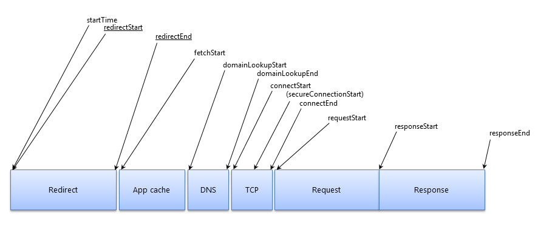

Copyright © 2012 W3C® (MIT, ERCIM, Keio, Beihang), All Rights Reserved. W3C liability, trademark and document use rules apply.
This specification defines an interface for web applications to access the complete timing information for resources in a document.
This section describes the status of this document at the time of its publication. Other documents may supersede this document. A list of current W3C publications and the latest revision of this technical report can be found in the W3C technical reports index at http://www.w3.org/TR/.
This is a work in progress and may change without any notices.
Please send comments to public-web-perf@w3.org (archived) with [ResourceTiming] at the start of the subject line.
This document is produced by the Web Performance Working Group. The Web Performance Working Group is part of the Rich Web Clients Activity in the W3C Interaction Domain.
You can find the latest Editor's Draft of this document in the W3C's Mercurial repository, which is updated on a regular basis.
Publication as a Working Draft does not imply endorsement by the W3C Membership. This is a draft document and may be updated, replaced or obsoleted by other documents at any time. It is inappropriate to cite this document as other than work in progress.
This document was produced by a group operating under the 5 February 2004 W3C Patent Policy. W3C maintains a public list of any patent disclosures made in connection with the deliverables of the group; that page also includes instructions for disclosing a patent. An individual who has actual knowledge of a patent which the individual believes contains Essential Claim(s) must disclose the information in accordance with section 6 of the W3C Patent Policy.
Implementers should be aware that this document is not stable. Implementers who are not taking part in the discussions are likely to find the specification changing out from under them in incompatible ways. Vendors interested in implementing this document before it eventually reaches the Candidate Recommendation stage should join the aforementioned mailing lists and take part in the discussions.
This section is non-normative.
User latency is an important quality benchmark for Web Applications. While JavaScript-based mechanisms can provide comprehensive instrumentation for user latency measurements within an application, in many cases, they are unable to provide a complete end-to-end latency picture. While Navigation Timing [NavigationTiming] addresses part of the problem by providing timing information associated with a navigation, this document introduces the ResourceTiming interface to allow JavaScript mechanisms to collect complete timing information related to resources on a document.
For example, the following JavaScript shows a simple attempt to measure the time it takes to fetch a resource:
<!doctype html>
<html>
<head>
</head>
<body onload="loadResources()">
<script>
function loadResources()
{
var start = new Date().getTime();
var image1 = new Image();
var resourceTiming = function() {
var now = new Date().getTime();
var latency = now - start;
alert("End to end resource fetch: " + latency);
};
image1.onload = resourceTiming;
image1.src = 'http://www.w3.org/Icons/w3c_main.png';
}
</script>
<img src="http://www.w3.org/Icons/w3c_home.png">
</body>
</html>
Though this script can measure the time it takes to fetch a resource, it cannot break down the time spent in various phases. Further, the script cannot easily measure the time it takes to fetch resources described in markup.
To address the need for complete information on user experience, this document introduces the PerformanceResourceTiming interface. This interface allows JavaScript mechanisms to provide complete client-side latency measurements within applications. With this interface, the previous example can be modified to measure a user's perceived load time of a resource.
The following script calculates the amount of time it takes to fetch every resource in the page, even those defined in markup. This example assumes that this page is hosted on http://www.w3.org. One could further measure the amount of time it takes in every phase of fetching a resource with the PerformanceResourceTiming interface.
<!doctype html>
<html>
<head>
</head>
<body onload="loadResources()">
<script>
function loadResources()
{
var image1 = new Image();
image1.onload = resourceTiming;
image1.src = 'http://www.w3.org/Icons/w3c_main.png';
}
function resourceTiming()
{
var resourceList = window.performance.getEntriesByType("resource");
for (i = 0; i < resourceList.length; i++)
{
if (resourceList[i].initiatorType == "img")
{
alert("End to end resource fetch: "+ resourceList[i].responseEnd - resourceList[i].startTime);
}
}
}
</script>
<img id="image0" src="http://www.w3.org/Icons/w3c_home.png">
</body>
</html>
All diagrams, examples, and notes in this specification are non-normative, as are all sections explicitly marked non-normative. Everything else in this specification is normative.
The key words "MUST", "MUST NOT", "REQUIRED", "SHOULD", "SHOULD NOT", "RECOMMENDED", "MAY", and "OPTIONAL" in the normative parts of this document are to be interpreted as described in RFC2119. For readability, these words do not appear in all uppercase letters in this specification. [RFC2119]
Requirements phrased in the imperative as part of algorithms (such as "strip any leading space characters" or "return false and abort these steps") are to be interpreted with the meaning of the key word ("must", "should", "may", etc) used in introducing the algorithm.
Some conformance requirements are phrased as requirements on attributes, methods or objects. Such requirements are to be interpreted as requirements on user agents.
Conformance requirements phrased as algorithms or specific steps may be implemented in any manner, so long as the end result is equivalent. (In particular, the algorithms defined in this specification are intended to be easy to follow, and not intended to be performant.)
The IDL fragments in this specification must be interpreted as required for conforming IDL fragments, as described in the Web IDL specification. [Web IDL]
The construction "a Foo object", where Foo is actually an interface, is sometimes used instead of
the more accurate "an object implementing the interface Foo".
The term DOM is used to refer to the API set made available to scripts in
Web applications, and does not necessarily imply the existence of an actual
Document object or of any other Node objects as
defined in the DOM Core specifications. [DOM3CORE]
A DOM attribute is said to be getting when its value is being retrieved (such as by author script), and is said to be setting when a new value is assigned to it.
The term "JavaScript" is used to refer to ECMA262, rather than the official term ECMAScript, since the term JavaScript is more widely known. [ECMA262]
This section is non-normative.
The PerformanceResourceTiming interface facilitates timing measurement of downloadable resources on the root page. It represents the timing information related to resources that initiate network downloads. For example, this interface is available for XMLHttpRequest objects [XMLHttpRequest], HTML elements [HTML5] such as iframe, img, script, object, embed, and link with the link type of stylesheet, and SVG elements [SVG] such as svg.
The audio and video elements are specifically covered in the Resource Timing Level 2 specification and not in this version of the specification.
The term "resource" is also used to refer to these elements in this work.
PerformanceResourceTiming InterfaceAll resources fetched from the networking layer by the current browsing context must be included as PerformanceResourceTiming objects in the Performance Timeline of the current browsing context. Resources that are retrieved from the user agent's networking layer cache must be included as PerformanceResourceTiming objects in the Performance Timeline.
The rest of this section is non-normative.
Examples:
src attribute of two HTML IMG elements,
the fetch of the resource initiated by the first HTML IMG element should
be included as a PerformanceResourceTiming object in the Performance Timeline.
The user agent might not re-request the URL from the networking layer for the second HTML IMG element, instead using an in-memory browser cache.
In this case, there is only a single request sent to the networking layer for retrieval, so the fetch of the resource by the first
IMG element would be the only occurrence in the Performance Timeline.
src attribute of a HTML IMG element is changed via script, both the fetch of the original resource as well
as the fetch of the new URL would be included as PerformanceResourceTiming objects in
the Performance Timeline.
IFRAME element is added via markup without specifying a src attribute, the user agent may fetch
an about:blank resource for the IFRAME. If at a later time the src attribute is changed dynamically via script, the user agent may
fetch the new URL resource for the IFRAME. In this case, both the
fetch of the about:blank resource, as well as the
fetch of the new URL would be included
as PerformanceResourceTiming objects in the Performance Timeline.
XMLHttpRequest is generated twice for the same canonical URL, both fetches of the resource would be
included as a PerformanceResourceTiming object in the Performance Timeline.
This is because the user agent must validate both requests from the networking layer, even if the resource is in a disk cache from the first request.
IFRAME element is included on the page, then only the resource requested by IFRAME src attribute is included
as a PerformanceResourceTiming object in the Performance Timeline.
Sub-resources requested by the IFRAME document will be included in the IFRAME document's Performance Timeline and not the parent
document's Performance Timeline.
IMG element has a data: URI as its source, then this resource will not
be included as a PerformanceResourceTiming object in the Performance Timeline.
By definition data: URI contains embedded data and does not require access to the networking layer.
The user agent may choose to limit how many resources are included as
PerformanceResourceTiming objects in the Performance Timeline.
The recommended minimum number of PerformanceResourceTiming objects is 150, though this may be changed by the user agent.
setResourceTimingBufferSize
can be called to request a change to this limit.
PerformanceResourceTiming Interfaceinterface PerformanceResourceTiming : PerformanceEntry { readonly attribute DOMString initiatorType; readonly attribute DOMHighResTimeStamp redirectStart; readonly attribute DOMHighResTimeStamp redirectEnd; readonly attribute DOMHighResTimeStamp fetchStart; readonly attribute DOMHighResTimeStamp domainLookupStart; readonly attribute DOMHighResTimeStamp domainLookupEnd; readonly attribute DOMHighResTimeStamp connectStart; readonly attribute DOMHighResTimeStamp connectEnd; readonly attribute DOMHighResTimeStamp secureConnectionStart; readonly attribute DOMHighResTimeStamp requestStart; readonly attribute DOMHighResTimeStamp responseStart; readonly attribute DOMHighResTimeStamp responseEnd; };
The PerformanceResourceTiming interface participates in the Performance Timeline and extends the following attributes of the PerformanceEntry interface:
The name attribute must return the resolved URL of the
requested resource. This attribute must not change even if the fetch redirected to a different URL.
The entryType attribute must return the DOMString resource.
The startTime attribute must return a DOMHighResTimeStamp
with the time immediately before the user agent starts to queue the resource for fetching.
If there are HTTP redirects or equivalent
when fetching the resource, and if all the redirects or equivalent are from the same origin as the current
document or the timing allow check algorithm passes, this attribute must return the same value as redirectStart.
Otherwise, this attribute must return the same value as fetchStart.
The duration attribute must return a DOMHighResTimeStamp
equal to the difference between responseEnd and startTime, respectively.
initiatorType attributeIf the initiator is an element, on getting, the initiatorType attribute
must return a DOMString with the same value as the localName of that
element.
If the initiator is a CSS resource downloaded by the url() syntax, such as @import url() or background: url(),
on getting, the initiatorType attribute must return the DOMString "css".
If the initiator is an XMLHttpRequest object, on getting, the initiatorType attribute must
return the DOMString "xmlhttprequest".
redirectStart attributeIf there are HTTP redirects or equivalent when fetching the resource and if all the redirects or equivalent are from the same origin as the current document, this attribute must return the starting time of the fetch that initiates the redirect.
If there are HTTP redirects or equivalent when fetching the resource and if any of the redirects are not from the same origin as the current document, and the timing allow check algorithm passes, this attribute must return the starting time of the fetch that initiates the redirect. Otherwise, this attribute must return zero.
redirectEnd attributeIf there are HTTP redirects or equivalent when fetching the resource and if all the redirects or equivalent are from the same origin as the current document, this attribute must return the time immediately after receiving the last byte of the response of the last redirect.
If there are HTTP redirects or equivalent when fetching the resource and if any of the redirects are not from the same origin as the current document, and timing allow check algorithm passes, this attribute must return the time immediately after receiving the last byte of the response of the last redirect. Otherwise, this attribute must return zero.
fetchStart attributeIf there are no HTTP redirects or equivalent, this attribute must return the time immediately before the user agent starts to fetch the resource.
If there are HTTP redirects or equivalent, this attribute must return the time immediately before the user agent starts to fetch the final resource in the redirection.
domainLookupStart attributeThis attribute must return the time immediately before the user agent starts the domain name lookup for the resource. If a persistent connection [RFC 2616] is used or the resource is retrieved from relevant application caches or local resources, this attribute must return the same value as fetchStart.
If the last non-redirected fetch of the resource is not the same origin as the current document, domainLookupStart must return zero unless the timing allow check algorithm passes.
domainLookupEnd attributeThis attribute must return the time immediately after the user agent finishes the domain name lookup for the resource. If a persistent connection [RFC 2616] is used or the resource is retrieved from relevant application caches or local resources, this attribute must return the same value as fetchStart.
If the user agent has the domain information in cache, domainLookupStart and domainLookupEnd represent the times when the user agent starts and ends the domain data retrieval from the cache.
If the last non-redirected fetch of the resource is not the same origin as the current document, domainLookupEnd must return zero unless the timing allow check algorithm passes.
connectStart attributeThis attribute must return the time immediately before the user agent start establishing the connection to the server to retrieve the resource. If a persistent connection [RFC 2616] is used or the resource is retrieved from relevant application caches or local resources, this attribute must return value of domainLookupEnd.
If the last non-redirected fetch of the resource is not the same origin as the current document, connectStart must return zero unless timing allow check algorithm passes.
connectEnd attribute This attribute must return the time immediately after the user agent finishes establishing the connection to the server to retrieve the resource. If a persistent connection [RFC 2616] is used or the resource is retrieved from relevant application caches or local resources, this attribute must return the value of domainLookupEnd.
If the transport connection fails and the user agent reopens a connection, connectStart and connectEnd should return the corresponding values of the new connection.
connectEnd must include the time interval to establish the transport connection. It must not include other time interval such as SSL handshake and SOCKS authentication.
If the last non-redirected fetch of the resource is not the same origin as the current document, connectEnd must return zero unless the timing allow check algorithm passes.
secureConnectionStart attribute This attribute is optional. User agents that don't have this attribute available must set it as undefined. When this attribute is available, if the scheme of the current page is HTTPS, this attribute must return the time immediately before the user agent starts the handshake process to secure the current connection. If the secureConnectionStart attribute is available but HTTPS is not used, this attribute must return zero.
If the last non-redirected fetch of the resource is not the same origin as the current document, secureConnectionStart must return zero unless the timing allow check algorithm passes.
requestStart attributeThis attribute must return the time immediately before the user agent starts requesting the resource from the server, or from relevant application caches or from local resources.
If the transport connection fails after a request is sent and the user agent reopens a connection and resend the request, requestStart must return the corresponding values of the new request.
If the last non-redirected fetch of the resource is not the same origin as the current document, requestStart must return zero unless the timing allow check algorithm passes.
responseStart attribute This attribute must return the time immediately after the user agent receives the first byte of the response from the server, or from relevant application caches or from local resources.
If the last non-redirected fetch of the resource is not the same origin as the current document, responseStart must return zero unless the timing allow check algorithm passes.
responseEnd attribute This attribute must return the time immediately after the user agent finishes receiving the last byte of the resource from from relevant application caches or from local resources.
partial interface Performance { void clearResourceTimings(); void setResourceTimingBufferSize(unsigned long maxSize); attribute Function onresourcetimingbufferfull; };
clearResourceTimings methodThe method clearResourceTimings clears the buffer used to store the current
list of PerformanceResourceTiming resources.
No parameters
No return value
No additional exceptions
setResourceTimingBufferSize methodThe setResourceTimingBufferSize method, when invoked, must set the maximum number of PerformanceResourceTiming resources that may be stored in
the buffer to the value of the maxSize parameter.
If this method is not called, the user agent should store at least 150 PerformanceResourceTiming resources in the buffer, unless otherwise specified by the user agent.
if the maxSize parameter is less than the number of elements currently stored in the buffer, no elements in the buffer are to be removed. The maxSize parameter will apply only after the clearResourceTimings method is called.
Parameters
inmaxSize type of unsigned long
The maxSize parameter sets the maximum number of PerformanceResourceTiming resources that will be stored in the buffer.
No return value
No additional exceptions
onresourcetimingbufferfull attributeThe callback onresourcetimingbufferfull is triggered when the buffer used to store the list of PerformanceResourceTiming is full. The callback can be used to package existing PerformanceResourceTiming resources and clear the buffered PerformanceResourceTiming list. While executing the onresourcetimingbufferfull callback, PerformanceResourceTiming will continue to be collected beyond the maximum limit of the resources allowed in the PerformanceResourceTiming interface until one of the following occurs:
clearResourceTimings is called - The PerformanceEntryList
will begin with the n+1th item if it exists and the first n elements are released, where n is the maximum number of resources allowed in the PerformanceResourceTiming
interface. If the n+1th item does not exist, the buffer is cleared. The max length of the PerformanceEntryList
does not change unless otherwise specified by setResourceTimingBufferSize.
setResourceTimingBufferSize is called - The PerformanceEntryList will extend and / or truncate to the buffer size specified.clearResourceTimings or
setResourceTimingBufferSize is called during the execution of the onresourcetimingbufferfull callback
- no updates are made to the PerformanceEntryList.Cross-origin resources must be included as PerformanceResourceTiming objects in the Performance Timeline. If the timing allow check algorithm fails for a cross-origin resource, these attributes of its PerformanceResourceTiming object must be set to zero: redirectStart, redirectEnd, domainLookupStart, domainLookupEnd, connectStart, connectEnd, requestStart, responseStart and secureConnectionStart, if supported by the user agent.
The terms origin and same origin are defined by The HTTP Origin Header. [IETF RFC 6454]
The term cross-origin is used to mean non same origin.
Server-side applications may return the Timing-Allow-Origin HTTP response header
to allow the User Agent to fully expose, to the document origin(s) specified, the
values of attributes that would have been zero due to the cross-origin
restrictions previously specified in this section.
Timing-Allow-Origin Response HeaderThe Timing-Allow-Origin header indicates whether a resource's timing can be
shared based by returning the value of the Origin request header in the
response. ABNF:
Timing-Allow-Origin = "Timing-Allow-Origin" ":" origin-list-or-null | "*"
origin-list-or-null is defined by The HTTP Origin Header. [IETF RFC 6454]
The timing allow check algorithm, which checks whether a cross-origin resource's timing information can be shared with the current document, is as follows:
If the HTTP response includes zero or more than one
Timing-Allow-Origin
header values, return fail and terminate this algorithm.
If the
Timing-Allow-Origin
header value is the "*" character, return pass and terminate this
algorithm.
If the value of
Timing-Allow-Origin
is not a case-sensitive match for the value of the
Origin header as defined by its
specification, return fail and terminate this algorithm.
Return pass.
The above algorithm also functions when the
ASCII serialization of an origin is
the string "null". Typically, this is the case when there are multiple redirects and the initiator is an XMLHttpRequest object.
In practice the
origin-list-or-null production is
more constrained. Rather than allowing a space-separated list of
origins, it is either a
single origin or the string
"null".
Vendor-specific proprietary user agent extensions are discouraged. If such extensions are needed, e.g., for experimental purposes, vendors must use the following extension mechanisms:
If an extension to the initiatorType IDL attribute return value is needed for an experimental initiator type, on getting the initiatorType IDL attribute, vendors MUST return a DOMString that uses the following convention:
[vendorprefix]-[name]
Where,
[vendorprefix] is a non-capitalized name that identifies the vendor,[name] is a non-capitalized name given to the initiator type,If the extension is a new timing attribute, it must:
Illustration
This illustration is non-normative.
The following graph illustrates the timing attributes defined by the PerformanceResourceTiming interface. Attributes underlined may not be available when fetching resources from different origins. User agents may perform internal processing in between timings, which allow for non-normative intervals between timings.

setResourceTimingBufferSize method.
resource.
Return to step 3.13 if the user agent fails to send the request or receive the entire response, and needs to reopen the connection.
When persistent connection [RFC 2616] is enabled, a user agent may first try to re-use an open connect to send the request while the connection can be asynchronously closed. In such case, connectStart, connectEnd and requestStart should represent timing information collected over the re-open connection.
onresourcetimingbufferfull is defined,
the callback onresourcetimingbufferfull
must be triggered.onresourcetimingbufferfull
callback, add them to the temporary buffer.
clearResourceTimings method is called in the onresourcetimingbufferfull callback,
clear all PerformanceResourceTiming objects in the primary buffer.
Copy all PerformanceResourceTiming objects in the temporary buffer to the
primary buffer.
setResourceTimingBufferSize method is called in the onresourcetimingbufferfull callback,
set the maximum size of the primary buffer to the maxSize parameter. If the maxSize parameter is larger than the previous size of the primary buffer,
append PerformanceResourceTiming objects in the temporary buffer to the primary buffer up to the maxSize parameter.
The value of the timing attributes must monotonically increase to ensure timing attributes are not skewed by adjustments to the system clock while fetching the resource. The difference between any two chronologically recorded timing attributes must never be negative. For all resources, including subdocument resources, the user agent must record the system clock at the beginning of the root document navigation and define subsequent timing attributes in terms of a monotonic clock measuring time elapsed from the beginning of the navigation.
This section is non-normative.
The PerformanceResourceTiming interface exposes timing information for a resource to any web page that has included that resource. To limit the access to the PerformanceResourceTiming interface, the same origin policy is enforced by default and certain attributes are set to zero, as described in Section 4.5 Cross-origin Resources. Resource providers can explicitly allow all timing information to be collected for a resource by adding the Timing-Allow-Origin HTTP response header, which specifies the domains that are allowed to access the timing information.
Statistical fingerprinting is a privacy concern where a malicious web site may determine whether a user has visited a third-party web site by measuring the timing of cache hits and misses of resources in the third-party web site. Though the PerformanceResourceTiming interface gives timing information for resources in a document, the cross-origin restrictions prevent making this privacy concern any worse than it is today using the load event on resources to measure timing to determine cache hits and misses.
We would like to sincerely thank Karen Anderson, Darin Fisher, Tony Gentilcore, Nic Jansma, Arvind Jain, Kyle Scholz, Jonas Sicking, James Simonsen, Steve Souders, Annie Sullivan, Sigbjørn Vik, Jason Weber to acknowledge their contributions to this work.